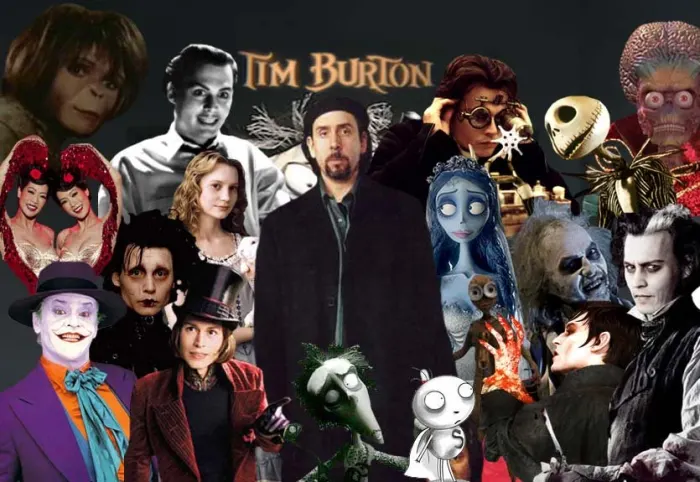
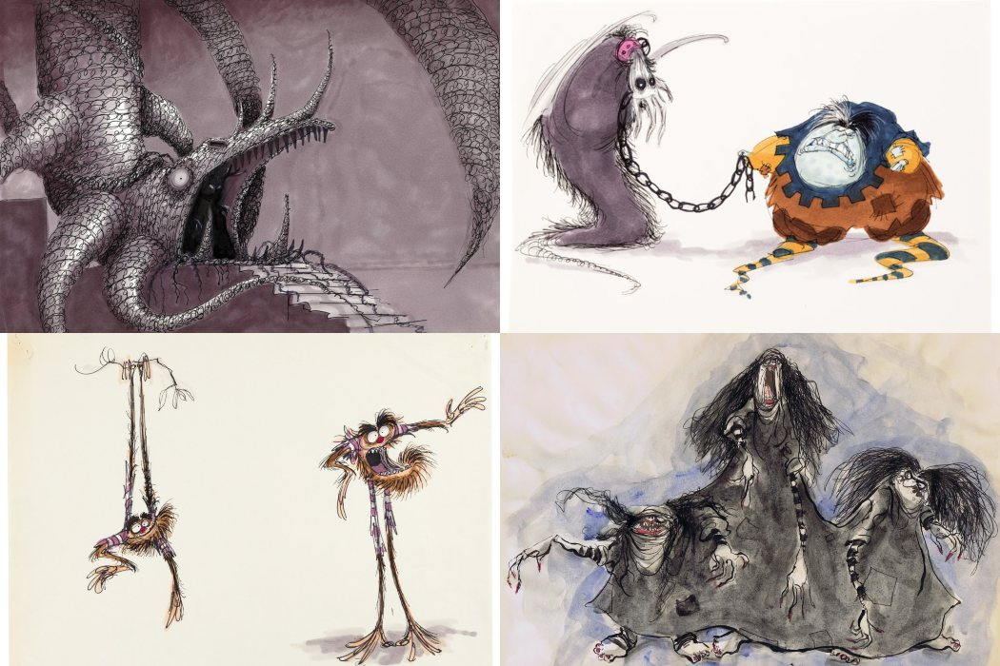
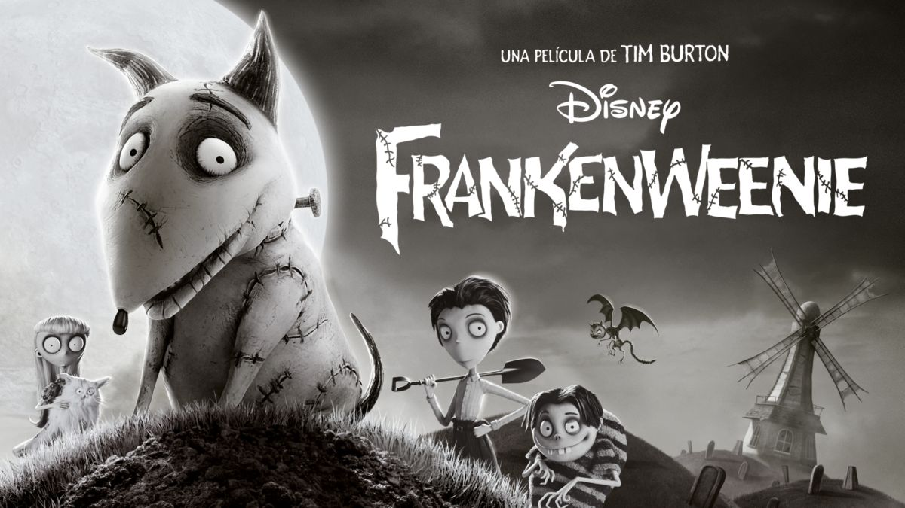
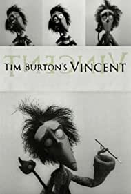
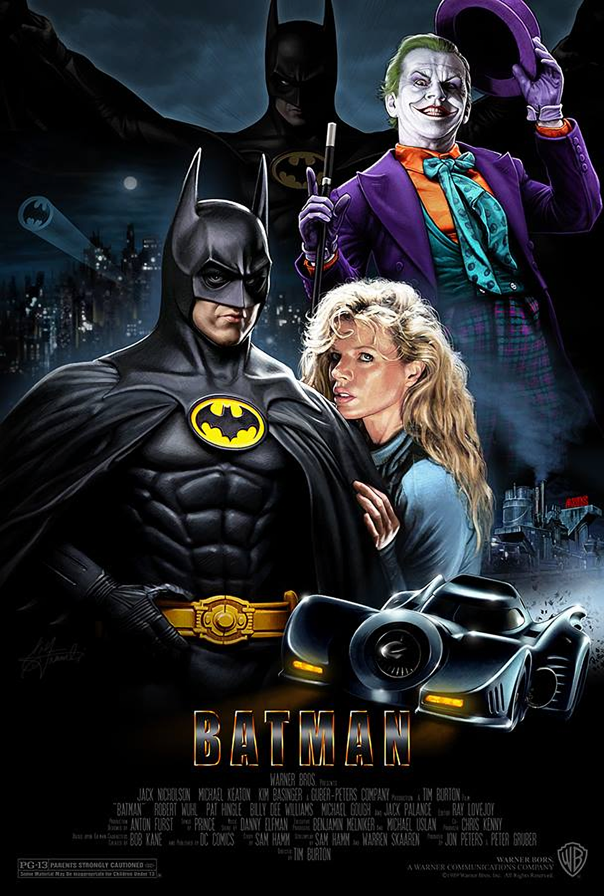
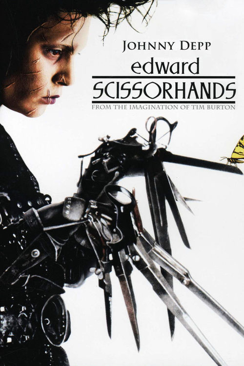
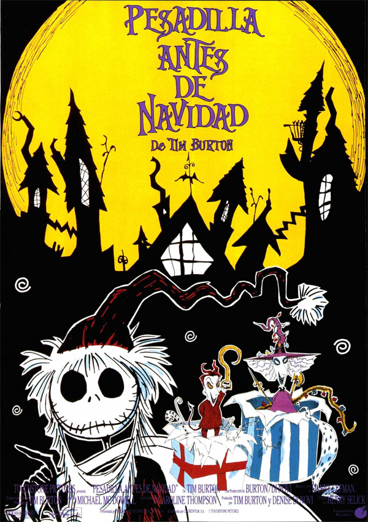
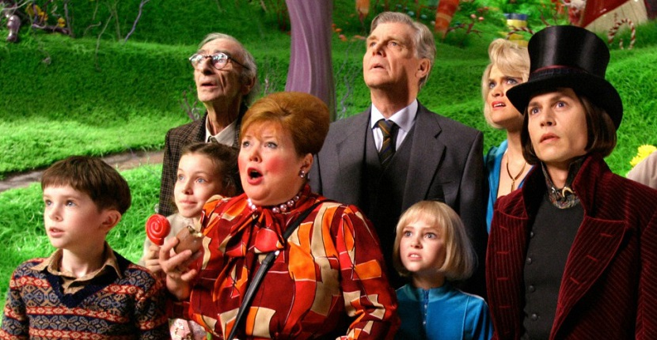
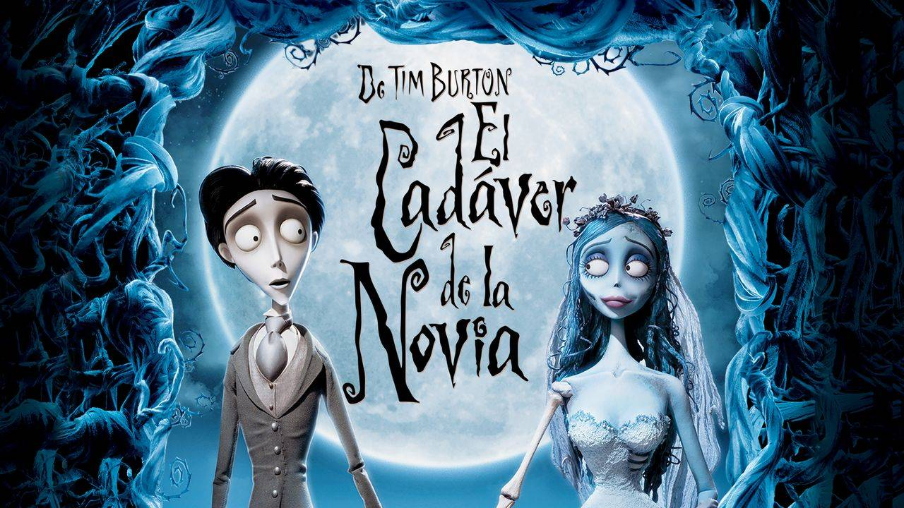

PERÚ
PERÚTIM BURTON
Director y productor de cine estadounidense. Destacado artífice tanto de la animación como de las películas
con actores reales, lo más característico de su filmografía sobresale por una excelente factura visual
puesta al servicio de historias fantásticas y góticas, no exentas a veces de un humor ácido y protagonizadas
con frecuencia por seres marginados o incomprendidos.

Tim Burton
Desde su época de estudiante en su ciudad natal mostró un gran talento para el dibujo, lo que le llevó a
matricularse en el California Institute of Arts, donde completó su formación artística. Presentó sus
trabajos en los estudios que fundara Walt Disney, que serían su lugar de creación durante años. Formó parte
del equipo de animadores de la compañía y participó, de ese modo, en la realización de largometrajes como
Tod y Toby y Taron y el caldero mágico.

Taron y el caldero mágico
Aprovechando su buena relación con los ejecutivos de la productora, logró realizar con su financiación dos
cortometrajes, Vincent (1982) y Frankenweenie (1984), que mostraron ya las características fundamentales de
su cine: estética expresionista, nostalgia por los personajes del cine clásico de terror y movimientos de
cámara muy similares a los empleados en el dibujo animado. Respondiendo a una llamada a diversos directores
para realizar una serie de adaptaciones televisivas de cuentos clásicos, Burton dirigió Aladino y la lámpara
maravillosa (1985), y ese mismo año colaboró con la productora NBC para rodar uno de los episodios de la
teleserie Alfred Hitchcock presenta, concretamente el titulado El tarro, cuyo argumento se basa en un cuento
de Ray Bradbury. Muchos años después participaría en una serie semejante producida por Steven Spielberg,
Cuentos asombrosos, que incluyó un capítulo de animación dirigido por Burton, Family dog (1993).

Frankenweenie (1984)

Vincent (1982)
Una estrella de la televisión, Pee-Wee Herman, fue el protagonista de su primer largometraje, La gran
aventura de Pee-Wee (1985) durante cuyo rodaje trabajó con el músico que participaría en la mayoría de sus
siguientes filmes, Danny Elfman. En Bitelchús (1988), su siguiente película, introduce al espectador en un
mundo disparatado, lleno de imaginación, que fue bien recibido por el público. Parecida originalidad
demostró en su adaptación a la gran pantalla de un clásico del cómic, Batman (1989), primera gran producción
en la que participó y que, gracias a su buen resultado en taquilla, consolidó la posición de Burton dentro
de la industria de Hollywood. Por la misma época se convirtió en productor ejecutivo de la adaptación
televisiva de Bitelchús, una serie de dibujos animados destinada al público infantil.

Batman (1989)
La secuela de Batman llevó por título Batman vuelve y llegó a las pantallas en 1992. Uno de los personajes
más destacados de esta película es Catwoman, una pérfida superheroína interpretada por Michelle Pfeiffer.
Eduardo Manostijeras (1990), protagonizada por Johnny Depp y Winona Ryder, y Pesadilla antes de Navidad
(1994) fueron sus siguientes proyectos en los que, dentro de la fantasía, se retratan personajes
incomprendidos, que sólo a través de los sueños pueden ver realizadas sus aspiraciones. El segundo de los
títulos citados, dirigido por Henry Selick y escrito y producido por Burton, es además una valiosa muestra
de su cine de animación.

Eduardo Manostijeras (1990)

Pesadilla antes de Navidad (1994)
En 1995 rodó uno de sus proyectos más personales, Ed Wood, cuyo argumento gira en torno al peculiar cineasta
del mismo nombre, considerado uno de los peores directores de la historia del cine. En la película aparece
como personaje el mítico actor de terror Bela Lugosi, excelentemente interpretado por Martin Landau. El
famoso intérprete de filmes de terror es, junto a Vincent Price, uno de los actores más admirados por
Burton, cuyo universo personal debe mucho a las películas por ellos protagonizadas.
Mars attacks! (1996), para muchos una obra maestra de humor ácido, no fue bien comprendida por el público estadounidense, que rechazó la sátira excesiva de su sociedad que se presenta en el filme. Tras ésta, Burton rodó Sleepy Hollow (1999), una claustrofóbica historia de terror con su actor fetiche, Johnny Depp, una inquietante Christina Ricci y un espectacular Cristopher Walken en su papel de misterioso caballero cortacabezas.
Tras Sleepy Hollow, Burton llevó a la pantalla una secuela de El planeta de los simios protagonizada, entre otras, por su para entonces compañera sentimental, Helena Bonham Carter. La película, considerada por muchos como fallida, supuso un cierto descalabro para el director, aunque no fue ningún obstáculo para contratar de nuevo a una gran estrella, Ewan McGregor, para protagonizar otra fantástica película titulada Big fish (2003), en la que la historia de la vida de un padre moribundo sirve de hilo conductor para narrar la relación con su hijo y el mundo de fantasía creado para éste.
Mars attacks! (1996), para muchos una obra maestra de humor ácido, no fue bien comprendida por el público estadounidense, que rechazó la sátira excesiva de su sociedad que se presenta en el filme. Tras ésta, Burton rodó Sleepy Hollow (1999), una claustrofóbica historia de terror con su actor fetiche, Johnny Depp, una inquietante Christina Ricci y un espectacular Cristopher Walken en su papel de misterioso caballero cortacabezas.
Tras Sleepy Hollow, Burton llevó a la pantalla una secuela de El planeta de los simios protagonizada, entre otras, por su para entonces compañera sentimental, Helena Bonham Carter. La película, considerada por muchos como fallida, supuso un cierto descalabro para el director, aunque no fue ningún obstáculo para contratar de nuevo a una gran estrella, Ewan McGregor, para protagonizar otra fantástica película titulada Big fish (2003), en la que la historia de la vida de un padre moribundo sirve de hilo conductor para narrar la relación con su hijo y el mundo de fantasía creado para éste.

Big fish (2003)
De nuevo con Johnny Depp, y acompañado también de Bonham Carter, estrenó en agosto de 2005 Charlie y la
fábrica de chocolate, basada en la novela juvenil homónima de Roald Dahl. Burton llevó a cabo un
espectacular despliegue de magia visual con el que consiguió de nuevo aunar un gran éxito de taquilla con
las buenas críticas. Repitió protagonistas, aunque esta vez sólo con la voz, en su nueva película de
animación, La novia cadáver (2005), una hermosa fantasía macabra que también cosechó un enorme éxito de
taquilla.

Charlie y la fábrica de chocolate (2005)

La novia cadáver (2005)